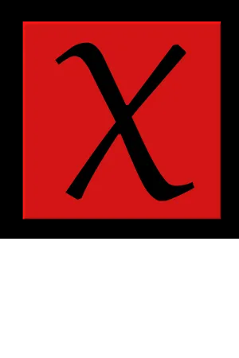

Sobhan Miryoosefi
I am a fourth-year Ph.D. student in the computer science theory group at Princeton University. I am honored to have Prof. Chi Jin and Robert Schapire as my advisors. Before joining Princeton University, I finished my B.Sc. in Computer Engineering at the Sharif University of Technology, Iran.
Here is my CV:
Research
I am primarily interested in theoretical and applied machine learning and related areas. More specifically, I am interested in data-driven sequential decison making such as reinforcement learning, and online learning.
Publications
 Reinforcement Learning with Convex Constraints
Reinforcement Learning with Convex Constraints
Sobhan Miryoosefi, Kianté Brantley, Hal Daumé III, Miroslav Dudik, Robert Schapire
Conference on Neural Information Processing Systems (NeurIPS), 2019
PDF (NeurIPS 2019)
Abstract
Poster
Code
Bibtex
Constrained episodic reinforcement learning in concave-convex and knapsack settings
Kianté Brantley, Miroslav Dudik, Thodoris Lykouris, Sobhan Miryoosefi, Max Simchowitz, Aleksandrs Slivkins, Wen Sun (alphabetical order)
Conference on Neural Information Processing Systems (NeurIPS), 2020
PDF (NeurIPS 2020)
Abstract
Poster
Code
Bibtex

Bellman Eluder Dimension: New Rich Classes of RL Problems, and Sample-Efficient Algorithms
Chi Jin, Qinghua Liu, Sobhan Miryoosefi (alphabetical order)
submitted to Conference on Learning Theory (COLT), 2021
PDF (arXiv)
Abstract
Bibtex
Education
 Ph.D. in Computer Science (2017-Present)
Ph.D. in Computer Science (2017-Present)
Princeton University, Princeton
Advisor: Prof. Chi Jin and Prof. Robert Schapire
M.A. in Computer Science (2017-2019)
Princeton University, Princeton
Advisor: Prof. Yoram Singer and Prof. Robert Schapire
 B.Sc. in Computer Engineering (2010-2014)
B.Sc. in Computer Engineering (2010-2014)
Sharif University of Technology, Tehran
Major: Software Eningeering
Experience
Research Assistant - 2017-present
Department of Computer Science, Princeton University
Teaching Assistant - 2017-present
Department of Computer Science, Princeton University
Software Engineering Intern - Summer 2016
Fraud Detection Group, Cafe Bazaar